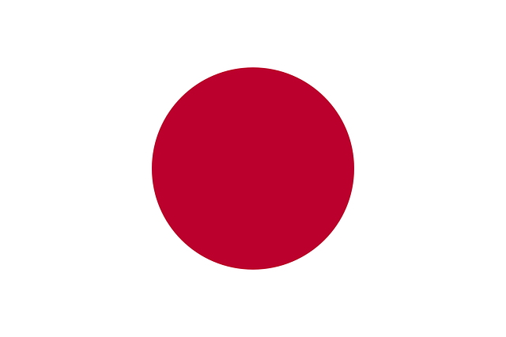
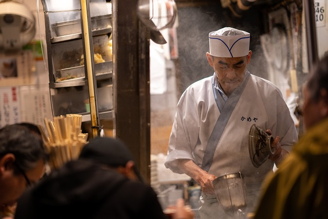
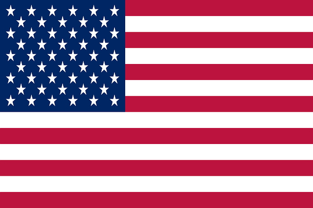
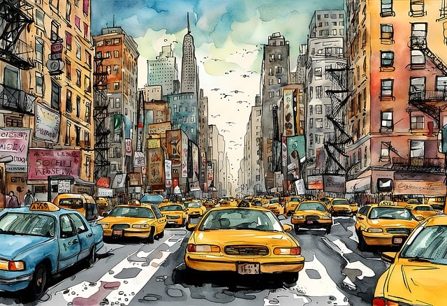
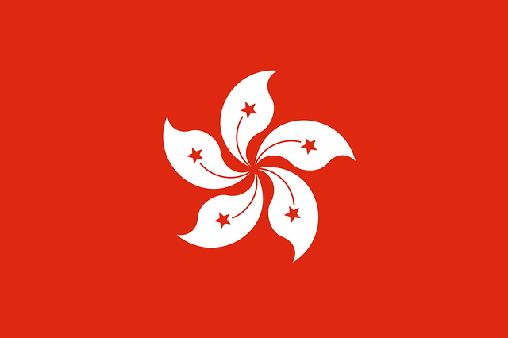
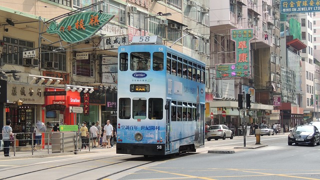
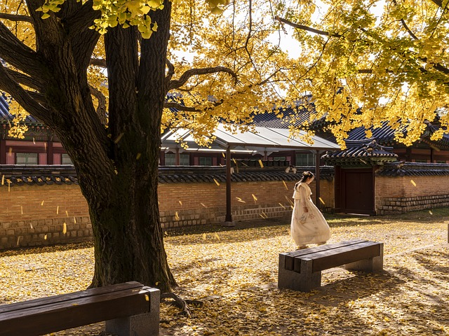

여러 나라를 다니며 가장 기억에 남았던 것은, 일본에서 먹었던 라멘과 홍콩에서 보았던 야경입니다. 여러분은 어디로 여행을 떠나서 무엇을 해 보고 싶나요? 아니면 가장 기억에 남았던 것은 무엇인가요?
세상을 넓게 바라봐야 한다는 부모님의 말씀에, 어렸을 때부터 여러 나라를 여행해 보았다.
어렸을 때는 부모님과, 때로는 단체 집단(태권도 도장)과도 함께 여행을 떠나보았다.
성인이 된 뒤로는 혼자 여행을 가고는 한다.
여행을 떠날 때마다 새로운 것을 배우고, 새로운 것을 경험하며, 새로운 것을 느끼게 된다.
맨 위로
일본

내가 가장 처음으로 가본 해외이자, 가장 많이 가본 나라이며, 가장 좋아하는 나라이다.
부모님과 함께 약 3번정도 가봤고, 다니던 태권도 도장에서 문화 교류를 위해 2번 가봤다.
성인이 된 뒤로는 혼자 여행을 즐기는 나라이다.
일본 사진

가장 기억에 남는 것들
일본에 여러 번 가본 뒤, 가장 기억에 남는 것들이 몇가지 있다.
가장 먼저, 4장 미니프로젝트에서 다뤘던 내용인 라멘이다.
일본에 갈 때마다 여러 라멘 가게를 방문하며, 다양한 라멘을 먹어보며 비교하는 것이 즐겁다.
그리고 삿포로에 갔을 때, 맥주 박물관에 방문해 보았는데, 다양한 맥주를 볼 수 있었고, 맥주에 대한 역사와 문화를 배울 수 있었다.
미국

초등학교 6학년 때 태권도 도장에서 문화 교류를 위해 가봤던 나라이다.
어렸을 때라 영어도 거의 하지 못했고, 미국을 가는것이 얼마나 힘든 것인지 몰랐기 때문에 다시 한 번 가보고 싶은 나라이다.
미국 사진

가장 기억에 남는 것들
미국에 가본 뒤, 가장 기억에 남는 것들이 몇가지 있다.
미국을 여행하면서, 미국 가정에서 홈스테이를 했는데, 한국의 문화와 미국의 문화가 달라서 신기한 경험이었고, 세상을 더 넓은 시야로 볼 수 있는 계기가 되었다.
미국의 태권도 도장도 방문해 보았는데, 태권도가 지구 반대편인 미국에도 인지도가 있다는 것에 놀랐다.
홍콩

중학교 때 가족들과 갔었는데, 물가가 비싸서 놀랐다.
홍콩에 가기 전까지는 홍콩=중국이라는 잘못된 생각을 가지고 있었는데, 홍콩의 여러 관광지를 방문해보며 홍콩 야경의 아름다움을 느낄 수 있었다.
홍콩 사진

가장 기억에 남는 것들
홍콩에 가본 뒤, 가장 기억에 남는 것들이 몇가지 있다.
홍콩 여행을 하면서, 홍콩의 다양한 음식을 먹어보았는데, 가족들은 입맛에 안 맞는다고 하였지만 나는 맛있게 먹었던 기억이 있다.
무엇보다 기억에 남는 것은, 홍콩 고유의 아름다운 야경이었다. 이 때 보았던 풍경이, 아직도 기억에 남는다.
대한민국
해외여행에서는 낯선 문화를 접하는 재미가 있지만, 국내 여행에서는 익숙하다고 생각했던 우리나라의 새로운 모습을 발견하는 재미가 있다.
같은 음식도 지역에 따라 이름이나 만드는 방법이 조금씩 다르고, 같은 한국어를 써도 말투에서 그 지역의 특색이 느껴진다.
앞으로는 국내 여행을 갈 때 유명한 관광지를 둘러보는 것과 함께, 그 지역 시장에 들러 평소에 먹어 보지 못한 음식도 맛보고 싶다.
대한민국 사진

그래도 역시 가장 좋은 나라는 우리나라
여러 나라를 가보았지만, 그래도 우리나라만큼 좋은 나라가 없다고 생각했다.
좁은 땅이지만, 다양한 문화가 살아있어 좋은 나라라고 생각한다.